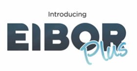
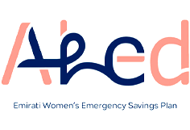
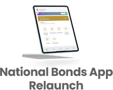
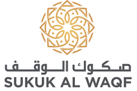
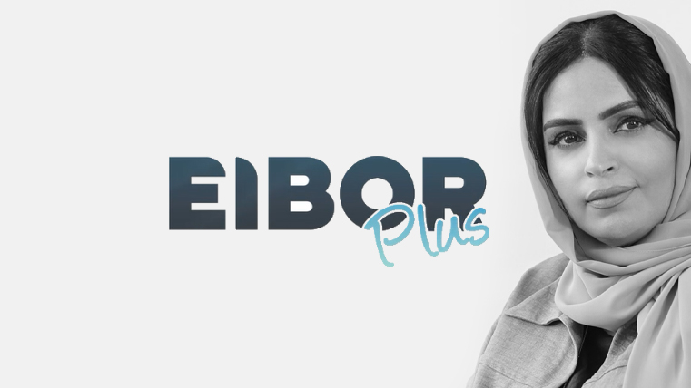
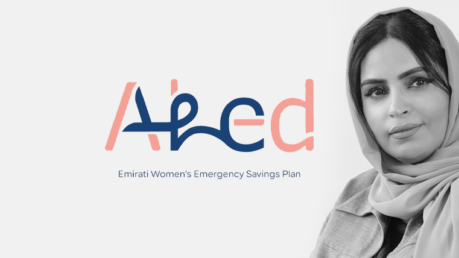
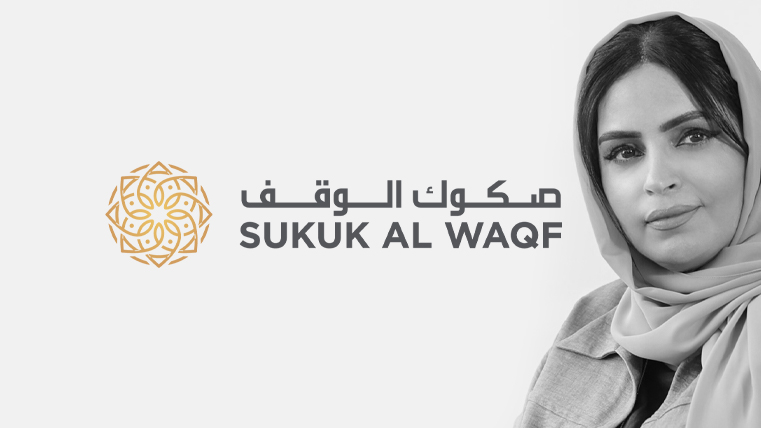

Our journey is defined by people who dared to plan, save, and succeed. Together, we build a culture of financial resilience that stands the test of time.
Group Deputy CEO National Bonds Corporation
Empowering People. Enabling Prosperity. Elevating the Future.
Guided by her vision to make saving a lifestyle and not just a necessity, Rehab Lootah has championed a series of pioneering initiatives that are redefining the financial landscape of the UAE. Her leadership brings together innovation, inclusion, and ethical finance, turning ambitious ideas into impactful programs that help individuals, families, and businesses build secure financial futures.
Each initiative under her direction, from promoting youth financial literacy to empowering women through dedicated saving programs, reflects her belief that true progress begins with financial awareness and access for all.
From Youth to Enterprise, Empowering Every Generation.

The Zero Government Bureaucracy Programme is a national initiative aimed at simplifying government procedures and eliminating unnecessary requirements.

The region’s first structured financial education program for youth, instilling the value of saving and smart investing from an early age.

An ambitious savings journey empowering individuals and corporates to reach AED 1 million through disciplined investing and profit accumulation.

A first-of-its-kind, Sharia-compliant, capital-protected investment offering returns 0.5% above EIBOR, designed to encourage sustainable wealth creation.

An initiative empowering over 10,000 Emirati women with emergency savings, financial awareness, and long term economic resilience.

A digital transformation milestone that resulted in a 67% surge in regular savers, enhancing accessibility and engagement across the UAE.

An award winning humanitarian investment initiative that combines faith based giving with sustainable financial growth.

National Bonds has taken another step toward digital innovation with the relaunch of its mobile app, offering a seamless, user-friendly, and intelligent platform that makes saving and investing simpler than ever.
The updated app reflects the company’s vision to empower individuals across the UAE to manage their savings with greater control, flexibility, and confidence — anytime, anywhere.
The redesigned app comes with a modern, intuitive interface that puts everything at your fingertips. From tracking your savings portfolio to starting new investment plans, the app ensures a smooth and transparent experience for every user.
Since the relaunch, National Bonds has seen an impressive surge in engagement:
These numbers highlight not just a new app — but a new movement toward digitally empowered saving in the UAE.
The app relaunch aligns with the UAE’s vision for a digitally advanced and financially aware society. It encourages users to take charge of their financial goals and develop a consistent saving habit through convenience and real-time insights.
By bridging technology with financial wellness, National Bonds is helping users transform saving from a passive act into an engaging and empowering experience.
If you haven’t yet explored the new app, download it from your app store and experience the difference:
The National Bonds App Relaunch is more than a digital upgrade — it’s a gateway to smarter saving. Whether you’re starting your first plan or growing your investments, the new app puts financial empowerment right in your pocket.

National Bonds, in partnership with the Knowledge Fund Establishment, has expanded its pioneering ‘Young Investor’ program—the first of its kind in the Middle East—to include three additional private schools: Al Nibras International School, Buds Public School, and St. Mary’s School Oud Metha. With this expansion, the program now reaches six schools in its first phase, following its successful rollout in Nad Al Sheba, Al Khawaneej, and Al Barsha.
Speaking at the launch event, Mohammed Qasim Al Ali, Group CEO of National Bonds, said:
“By expanding the ‘Young Investor’ program, we are nurturing financially aware generations equipped to navigate a dynamic economic landscape while supporting the UAE’s vision to integrate financial education into schools.”
Abdulla Mohammed Al Awar, CEO of the Knowledge Fund Establishment, added:
“The program’s success reflects growing interest from the education sector. We remain committed to empowering more schools to join and help students build a strong foundation in saving and investment.”
Launched earlier this year, the ‘Young Investor’ program introduces students to core financial topics such as money management, savings, investments, loans, and Takaful insurance. Its interactive workshops and practical exercises bridge theory and practice, enhancing students’ decision-making and financial planning skills.

The UAE launched a Zero Government Bureaucracy (ZGB) programme, an ambitious initiative aimed at overhauling the current government work structure to enhance service efficiency and quality.
The ZGB programme seeks to eliminate redundant government procedures and requirements, significantly simplifying the administrative process. Ministries and government entities are tasked with the immediate implementation of the programme, which includes cancelling a minimum of 2,000 government measures, halving the time required for procedures, and removing all unnecessary bureaucracy by end of 2024.
The programme is also set to develop simpler, quicker and more efficient government procedures. By focusing on the consolidation of similar procedures, the removal of superfluous steps, and the acceleration of service delivery, the UAE Government will make an extraordinary leap in the administration of its procedures.
Aiming to bolster the effectiveness of government procedures from ministries and federal entities, the ZGB programme will strive to enhance the UAE’s leadership and its standing in global competitiveness rankings in terms of government efficiency and minimal bureaucracy.

National Bonds has introduced the “My One Million Plan”, a first-of-its-kind savings programme designed to help individuals and companies in the UAE reach AED 1 million in combined savings and profit. The plan encourages long term financial discipline while rewarding consistency and commitment.
With the My One Million Plan, savers can choose a flexible term between 3 and 10 years, depending on their financial goals. Participants can begin with an optional lump-sum deposit and commit to regular monthly contributions. Over the chosen tenure, their savings and accumulated profit together are projected to reach AED 1 million.
The plan is open to both individuals and corporates. Companies can even contribute on behalf of their employees, making it a valuable employee-retention and benefit initiative.
Participants decide their savings period and contribution structure. For instance, someone choosing a 10-year plan with an upfront deposit of AED 100,000 would need to contribute around AED 6,200 per month to hit the million-dirham goal. Shorter durations are also possible, though they require higher monthly amounts.
Subscribers automatically qualify for National Bonds’ reward draws, including cash prizes and luxury cars — an additional incentive to stay invested.
The AED 1 million figure combines both your total savings and expected profits. Missing payments or early withdrawals can affect the outcome. Returns depend on actual profit rates declared by National Bonds, which may vary each year.
The My One Million Plan isn’t about quick wealth — it’s about consistent, disciplined saving. For anyone in the UAE seeking a structured path toward financial independence, this plan provides both motivation and a clear destination.

National Bonds has introduced EIBOR Plus, a Sharia-compliant investment option designed for individuals and corporates seeking steady, market-linked returns. The product offers investors the chance to earn EIBOR + 0.5% per annum, providing both stability and growth potential in a rising interest-rate environment.
EIBOR (Emirates Interbank Offered Rate) is the benchmark rate at which UAE banks lend to one another. It reflects the cost of borrowing in dirhams and influences rates on loans, mortgages, and investment products across the country. When EIBOR rises, so do returns for investors in EIBOR-linked products.
The EIBOR Plus plan links your profit to the UAE’s benchmark rate — meaning your returns move in line with market conditions. Investors enjoy:
This makes EIBOR Plus ideal for investors who want to balance security with market-driven returns, without taking on unnecessary risk.
In an economy where interest rates fluctuate, EIBOR Plus gives savers an opportunity to benefit from rate increases while maintaining peace of mind through capital protection. The quarterly rate review ensures that your profit reflects current market conditions — keeping your money actively working for you.
With EIBOR Plus, National Bonds has created a simple yet powerful investment tool that adapts to the UAE’s financial landscape. Whether you’re planning short-term growth or looking to diversify your portfolio, this product offers the right balance between safety and performance — all under the trusted National Bonds brand.

National Bonds has launched the Ahed Programme, a pioneering savings initiative dedicated to Emirati women, helping them build strong emergency funds and enhance financial independence. Announced on Emirati Women’s Day, the programme represents a new chapter in empowering women to take charge of their financial well-being.
The Ahed Programme is designed to encourage women to save for unexpected life events — such as medical emergencies, home repairs, or family needs. With flexible savings options and easy enrollment through the National Bonds mobile app, the plan helps participants create an emergency fund tailored to their lifestyle and income.
Women can start saving with a plan that suits their financial goals. The programme aims to support 10,000 Emirati women in its first phase, offering:
Through consistent saving, participants are encouraged to build an emergency reserve equivalent to six months of expenses, ensuring stability in times of need.
The Ahed Programme goes beyond simple saving — it promotes a culture of financial empowerment. By combining practical saving tools with financial education, National Bonds is helping women strengthen their confidence and independence.
The Ahed Programme is more than a savings plan it’s a movement towards financial resilience and empowerment. By helping Emirati women take control of their savings, National Bonds continues to build a culture of security, confidence, and prosperity for future generations.

The UAE continues to pioneer innovative financial solutions that blend ethical investment with social good. One such initiative is the Sukuk Al Waqf, a groundbreaking programme that combines the principles of waqf (Islamic charitable endowment) with sukuk (Islamic investment certificates).
Launched under the guidance of the Awqaf and Minors Affairs Foundation, in collaboration with the Mohammed bin Rashid Global Centre for Endowment Consultancy and National Bonds, Sukuk Al Waqf aims to create a sustainable and transparent system for charitable giving.
At its core, Sukuk Al Waqf allows individuals and organizations to contribute funds that are invested in Shariah-compliant assets, with the profits directed toward charitable causes — such as education, healthcare, and community development.
Unlike traditional donations that are spent immediately, Sukuk Al Waqf ensures that contributions are preserved and continue to generate ongoing benefits. It transforms a one-time act of charity into a long term source of goodness.
Sukuk Al Waqf reflects the UAE’s commitment to innovation in finance and community welfare. It bridges the gap between spiritual values and modern investment practices, supporting the nation’s goal of fostering a compassionate and financially aware society.
By combining faith-driven philanthropy with the tools of Islamic finance, the initiative empowers every participant to contribute to lasting positive change.
Sukuk Al Waqf is more than a financial product — it’s a movement toward purpose-driven investment. It offers a way for individuals to make their wealth work for both spiritual fulfilment and societal progress.
Through this initiative, National Bonds and its partners reaffirm that true prosperity lies in giving back, ensuring every contribution continues to create value for generations to come.